Valve Clearance (2AZ-FE) Adjustment |
| 1. Remove Front Tire RH |
| 2. Remove Engine Under Cover NO.1 |
Remove the 6 bolts and 7 clips, and remove the engine under cover No.1.
| 3. Remove Engine Under Cover Rear RH |
Remove the 5 clips and remove the RH rear engine cover.
| 4. Remove Radiator Upper Air Deflector |
Remove the 8 clips and the radiator upper air deflector.
| 5. Remove Engine Cover Sub-assembly NO.1 |
 |
Remove the 2 nuts and engine cover assembly No.1.
| 6. Remove Ignition Coil Assembly |
Disconnect the ignition coil connectors.
 |
Remove the 4 bolts and ASSY4 ignition coils.
| 7. Remove Cylinder Head Cover Sub-assembly |
 |
Disconnect the ventilation hose and ventilation hose No.2.
 |
Remove the 2 bolts and disconnect the wire harness from the cylinder head cover.
 |
Remove the 8 bolts and 2 nuts, and remove the cylinder head cover.
| 8. Set No. No.1 Cylinder to TDC/Compression |
 |
Turn the crankshaft in the normal direction to set the No. No.1 cylinder to TDC/compression, and align the timing mark (notch) of the crankshaft pulley with the 0° position on the timing chain cover.
Check that the timing marks of the camshaft timing gears and the front marks of the bearing caps are at the positions shown in the illustration.
| 9. Inspect Valve Clearance |
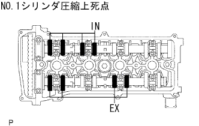 |
Inspect the valve clearance at the positions shown in the illustration.
Using a feeler gauge, measure the clearance between the valve lifter and camshaft.
Turn the crankshaft 360° in the normal direction of rotation and set the No. No.4 cylinder to TDC/compression.
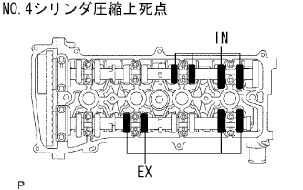 |
Inspect the valve clearance at the positions shown in the illustration.
Using a feeler gauge, measure the clearance between the valve lifter and camshaft.
| 10. Adjust Valve Clearance |
Set the No. No.1 cylinder to TDC/compression.
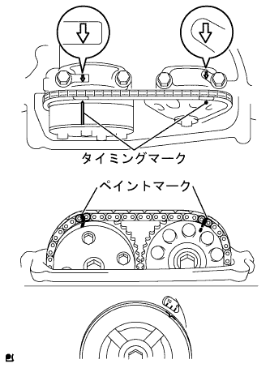 |
Turn the crankshaft in the normal direction to set the No. No.1 cylinder to TDC/compression, and check that each timing mark is at the position shown in the illustration.
Place paint marks on the chain plates corresponding to the timing marks of the camshaft timing gears.
Remove the chain tensioner assembly No.1.
 |
Disengage the 2 clamps and disconnect the harness clamp.
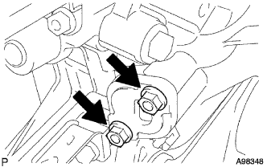 |
Remove the 2 nuts, and remove the chain tensioner assembly No.1 and gasket.
Remove camshaft No.2.
 |
Using an adjustable wrench, hold the service hexagon of camshaft No.2 and loosen the set bolt of the camshaft timing gear.
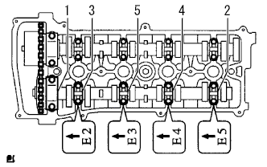 |
Remove the 4 camshaft bearing caps No.2 and No.3 in the order shown in the illustration.
 |
With camshaft No.2 lifted from the cylinder head, remove the set bolt.
Remove camshaft No.2 and the camshaft timing gear.
Remove the camshaft.
 |
Remove the 4 camshaft bearing caps No.1 and No.3 in the order shown in the illustration.
Remove the camshaft.
 |
Suspend the chain with a rope or equivalent.
Remove the valve lifter.
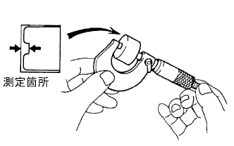 |
Using a micrometer, measure the thickness of the removed valve lifter.
Select a valve lifter.
| A | Selected valve lifter | |
| B | Thickness of removed valve lifter | |
| C | Measured valve clearance | |
Install the selected valve lifters.
Install the camshaft.
 |
Install the camshaft so that the paint mark applied to the chain plate aligns with the timing mark of the camshaft timing gear assembly.
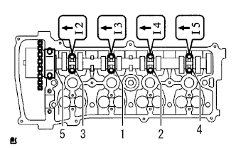 |
Check the front marks and numbers on the camshaft bearing caps, and tighten them in the order shown in the illustration.
Install camshaft No.2.
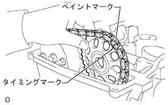 |
Install the camshaft timing gear so that the paint mark applied to the chain plate aligns with the timing mark of the camshaft timing gear.
|
In the above condition, temporarily install camshaft No.2 to the camshaft timing gear with the set bolt.
 |
Check the front marks and numbers on the camshaft bearing caps, and tighten them in the order shown in the illustration.
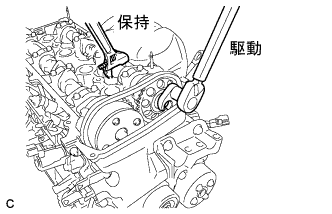 |
Using an adjustable wrench and union nut wrench (14mm), hold the service hexagon of the camshaft and tighten the set bolt of the camshaft timing gear.
 |
After installing the chain, check that each timing mark is at the position shown in the illustration.
Install chain tensioner assembly No.1.
 |
Release the cam lock, push in the plunger and set the hook.
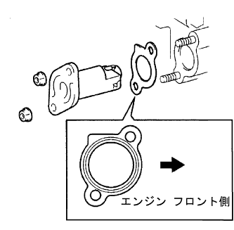 |
Install the chain tensioner with a new gasket and the 2 nuts.
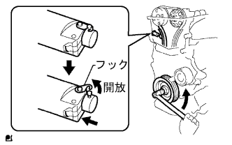 |
After installing the chain tensioner, turn the crankshaft slightly in reverse to release the hook of the chain tensioner.
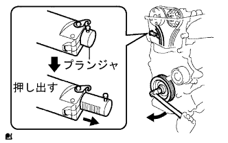 |
Turn the crankshaft in the normal direction to push out the plunger of the chain tensioner.
|
Connect the harness clamp with the 2 clamps.
| 11. Install Cylinder Head Cover Sub-assembly |
 |
Apply Seal Packing Black at the locations shown in the illustration.
 |
Install the cylinder head cover with the 8 bolts and 2 nuts.
|
Install the wire harness to the head cover with the 2 bolts.
|
Connect the ventilation hose and ventilation hose No.2.
| 12. Install Ignition Coil Assembly |
|
Install the ASSY4 ignition coils with the 4 bolts.
Connect the connector.
| 13. Inspect for Engine Oil Leaks |
| 14. Install Engine Cover Sub-assembly NO.1 |
|
Install the engine cover assembly No.1 with the 2 nuts.
| 15. Install Radiator Upper Air Deflector |
Install the radiator upper air deflector with the 8 clips.
| 16. Install Engine Under Cover Rear RH |
Install the engine under cover rear RH with the 5 clips.
| 17. Install Engine Under Cover NO.1 |
|
Install the engine cover assembly No.1 with the 2 nuts.
| 18. Install Front Tire RH |